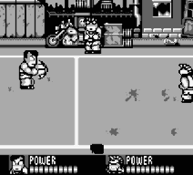
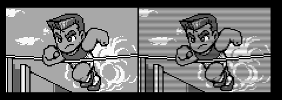

Маленькое руководство по превращению вашей Linux машины в игровую платформу
Часть 2
Иван Зенков
[email protected]
В 1989 "вековая" компания Nintendo (именно "вековая", ей более ста лет),
благодаря стараниям Гунпея Йаокои (Gunpei Yokoi), выпустила на рынок
карманную игровую приставку Game Boy с чёрно-белым жидкокристаллическим
экраном, отображающим всего четыре оттенка серого цвета. У нас она, дай бог
вспомнить, появилась где-то в 91-93 годах. Ещё немного спустя, Game Boy уже
стал самой популярной приставкой в мире, причём во многом благодаря
жёлтобрюхому покемону Pikachu. В 98-99 покемоно-пневмания поразила весь мир
(правда Россия в те года осталась в стороне). Почти все дети Америки (до
известного терракта с торговым центром) засыпали в обнимку с Pikachu, а в
школу ходили именно с Game Boy'ем (после происшествия с небоскрёбами покемон
уступил своё место пластмассовым солдатам и пожарникам). В Японии же было
тоже самое. Помнится, даже наши новости рассказывали о тамошнем скандале.
Тогда во время трансляции мультсериала "Покемон", было якобы использовано
некое мигание на чистоте, недопустимой для психики ранимых японских детей.
Как сообщала пресса, многие сошли с ума.
Где-то в 98 году, Nintendo выпустила Game Boy Color, с цветным дисплеем и
поддержкой классического чёрно-белого Game Boy'я. Более того, выпустив такие
устройства, как Game Boy Camera и Game Boy Printer, Nintendo вызвала волну по
созданию детского PDA, имя которому Game Boy.
Ну и сравнительно недавно (21 марта 2001 года), Nintendo выпустила на
японский рынок портативную 32-битную игровую систему Game Boy Advance
(дисплей для которого, если мне не изменяет память, был изготовлен компанией
Sharp). Стоит ли говорить, что GBA стал чуть ли теперь не полноценным PDA (а
может даже больше). Для него создаётся огромное колличество таких девайсов,
которые и на PDA-то трудно увидеть, не говоря уже о приставке. Короче, наш
рассказ пойдёт о полной эмуляции семейства Game Boy на платформе
GNU/Linux.
Game Boy, Game Boy Color, Game Boy Advance (GB, GBC, GBA)
Вы, наверное, сейчас думаете, что я буду рассказывать о десятках, или по
меньшей мере трёх, эмуляторах для работы с этими системами? Ничего
подобного, расскажу я только об одном, но очень хорошем. Эмулятор этот
называется VisualBoyAdvance и его версии для разных операционных систем и на
разных языках, доступны по адресу http://vboy.emuhq.com/ (902 kB)
(пользователям Gentoo ещё проще, для них он доступен в дереве Portage).
Жил-был парень под ником Forgotten. В один прекрасный момент он написал
отличный эмулятор GB и GBC, VisualBoy. Когда вышел Game Boy Advance, он
добавил его поддержку к своему эмулятору и мир увидел VisualBoyAdvanced
(причём под GPL). Так ли это было или ни так мне не известно, но факт то, что
VisualBoyAdvanced отлично поддерживает все (!) три системы.
Использовать его более чем просто (куда легче, чем эмулятор NES, Fceultra
о котором я уже рассказывал в первой части данного цикла). Устанавливаем
(стандартно) и пишем:
VisualBoyAdvance -2 game.gb

Я же говорил, что это очень просто. Ключ -2 указывает размер окна. Всего
их 4 (от 1, до 4) не считая ключа -f, то есть fullscreen. Ещё можно выбрать
один из фильтров:
--filter-normal 0 - normal mode
--filter-tv-mode 1 - TV Mode
--filter-2xsai 2 - 2xSaI
--filter-super-2xsai 3 - Super 2xSaI
--filter-super-eagle 4 - Super Eagle
--filter-pixelate 5 - Pixelate
--filter-motion-blur 6 - Motion Blur
--filter-advmame 7 - AdvanceMAME Scale2x
--filter-simple2x 8 - Simple2x
--filter-bilinear 9 - Bilinear
--filter-bilinear+ 10 - Bilinear Plus
Что несколько сказывается на изображении.

game.gb -- как вы уже догадались, образ игры для обычного Game Boy'я (для
других расширение примет вид gbc и gba, соответственно). Образы эти легко
можно найти при помощи всё тех же google и yandex'а, по соответствующим
ключевым словам или на http://www.pdroms.de/index.php (правда в этом случае,
полных версий не обещаю).
Чтобы быть до конца справедливым, следует сказать, что VisualBoyAdvance -
это, разумеется, не единственный эмулятор Game Boy для Linux. На самом деле
их вообще достаточно много. Вот к примеру gngb
(http://membres.lycos.fr/frogus/gngb/) или ещё один, и надо сказать очень
хороший, со звучным именем Gnuboy. Первое его преимущество - это размер,
что-то около 183 kB. Первый же его недостаток, это то, что он не
поддерживает Game Boy Advance (что понятно, при таком то размере).
Приобрести же его можно по адресу http://gnuboy.unix-fu.org/ (пользователям
Gentoo, достаточно набрать "emerge app-emulation/gnuboy").
Вот вроде на сегодня и всё. Теперь наша GNU/Linux машина,
поддерживает аж 4 игровые приставки, а это тысячи и тысячи различных
игр.
Продолжение следует...